愛迪生首頁 環境介紹 教學特色
主題情境
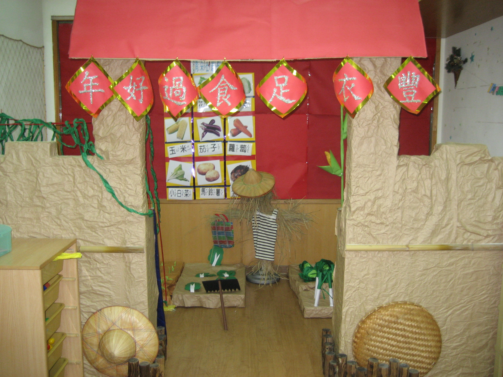 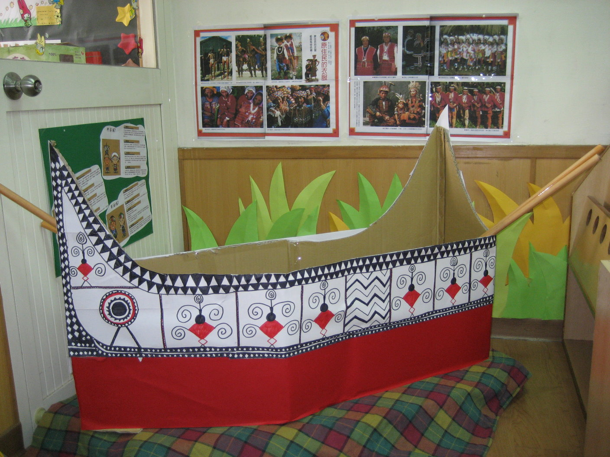 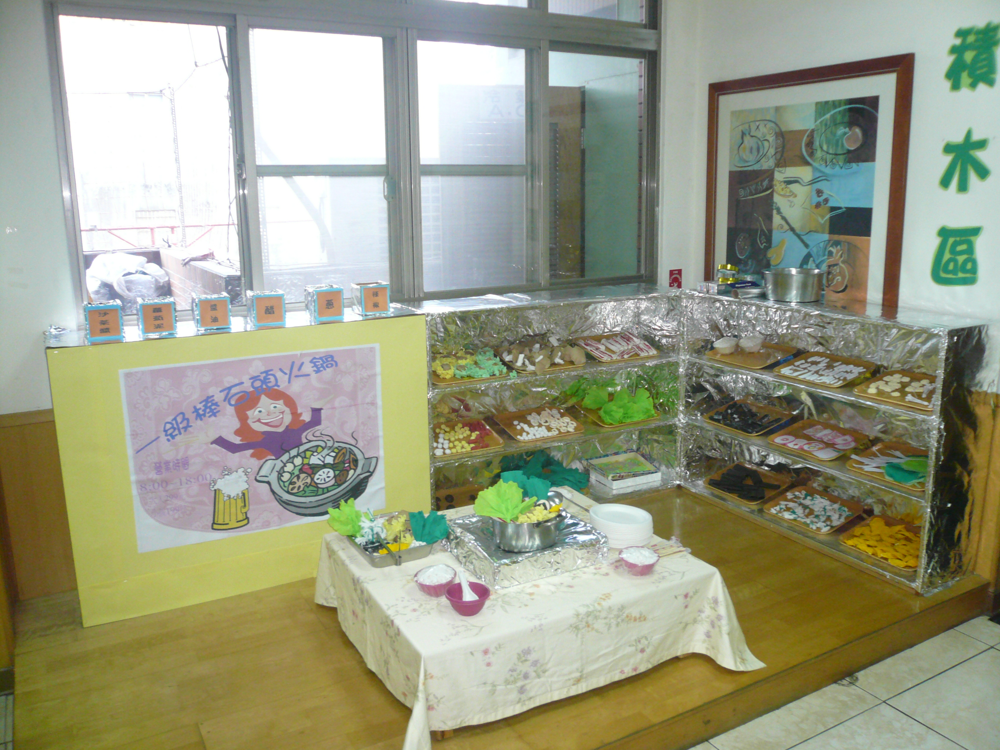 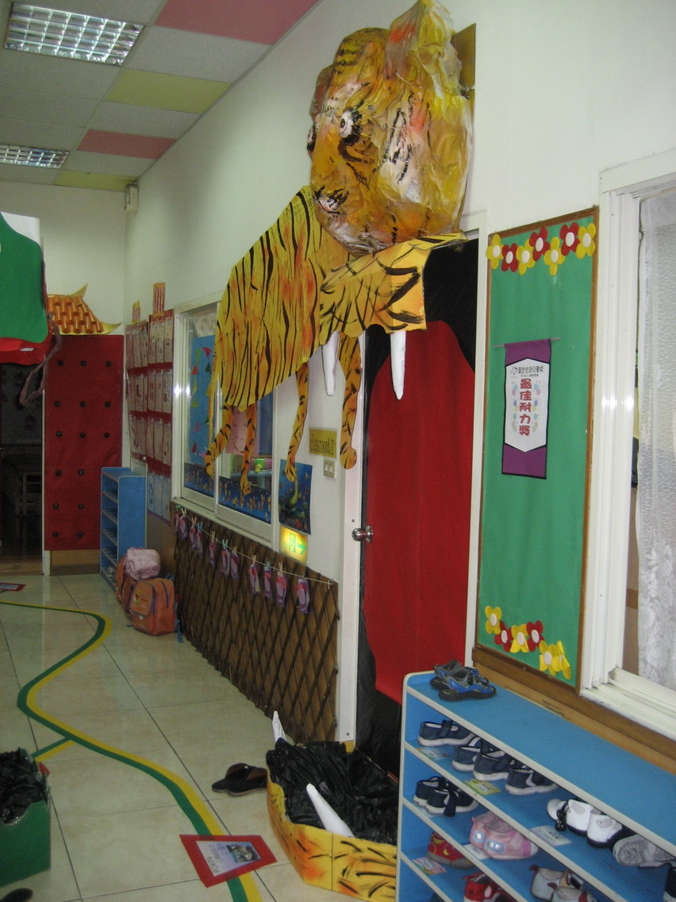
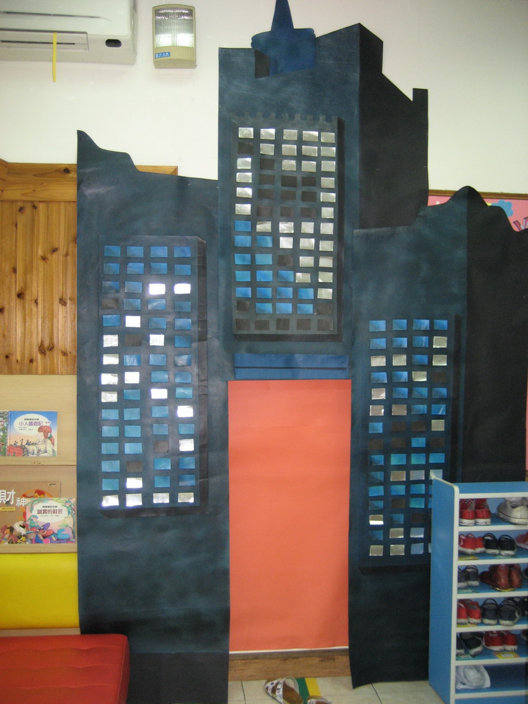 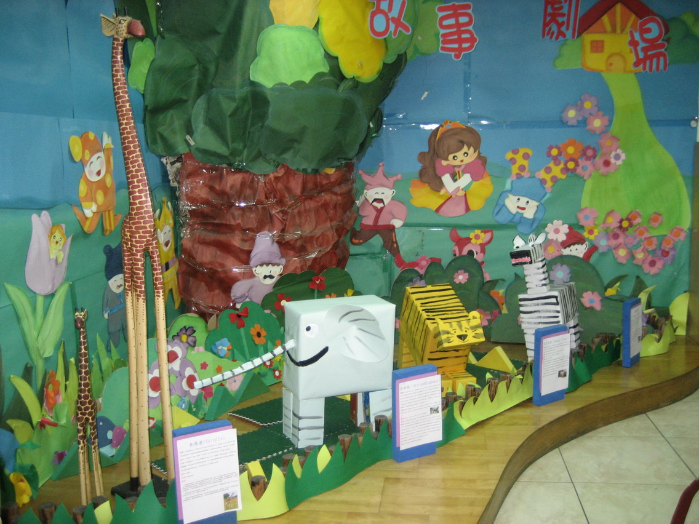 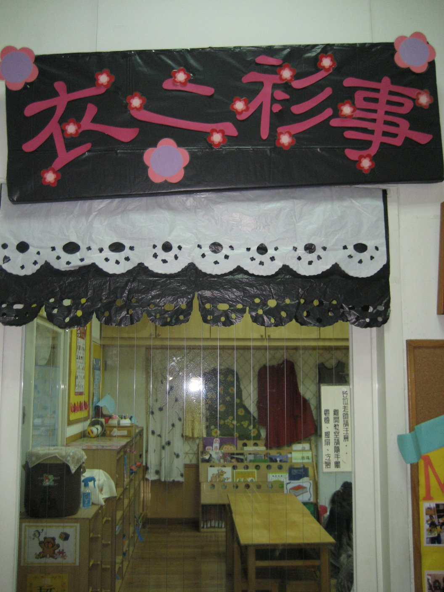 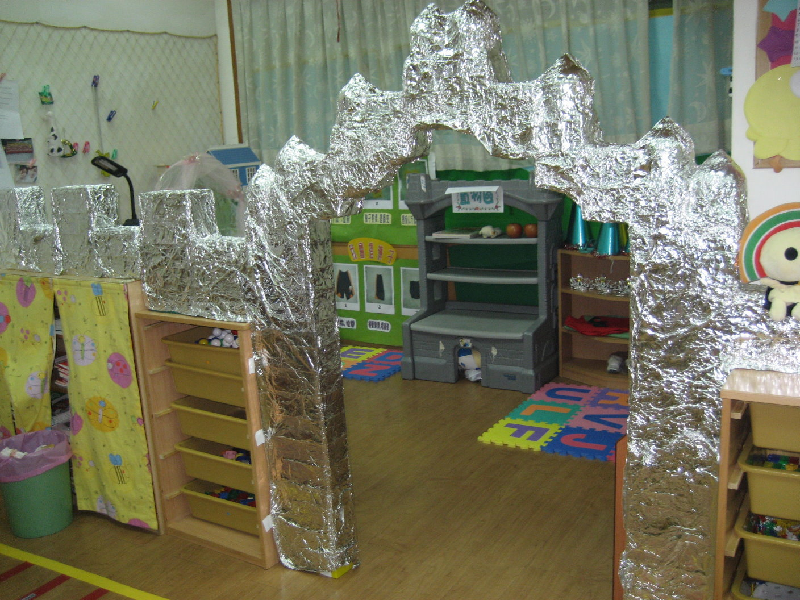
培養孩子的美感，是給他幸福和快樂的源頭活水。在幼兒園裡，整潔的環境、適宜的情境佈置、豐富的角落安排，
孩子的美感教育正在潛移默化進行中。
主題教學，創造從無到有的空間
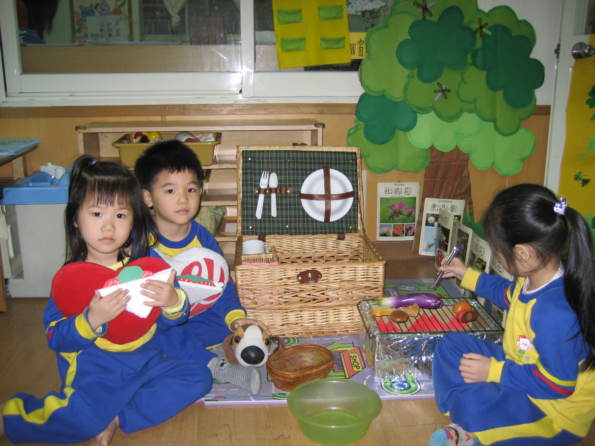 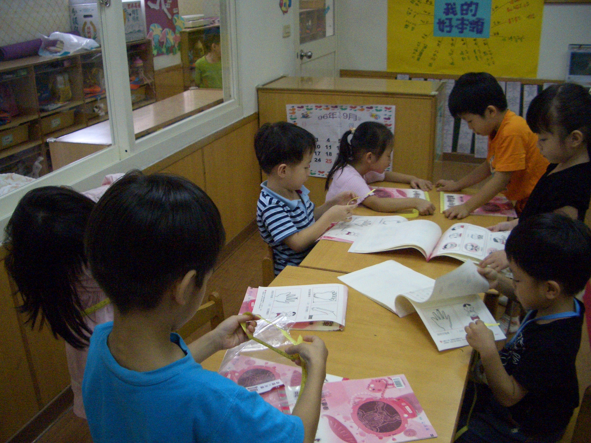 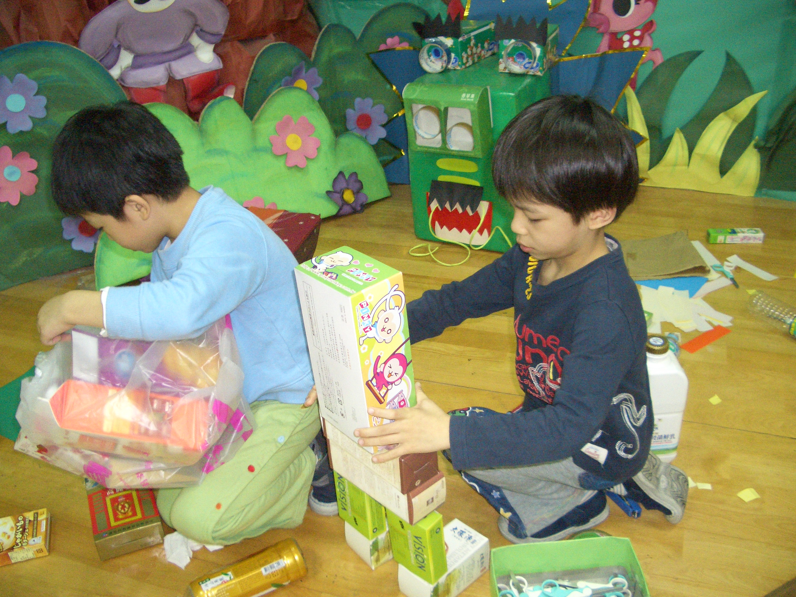
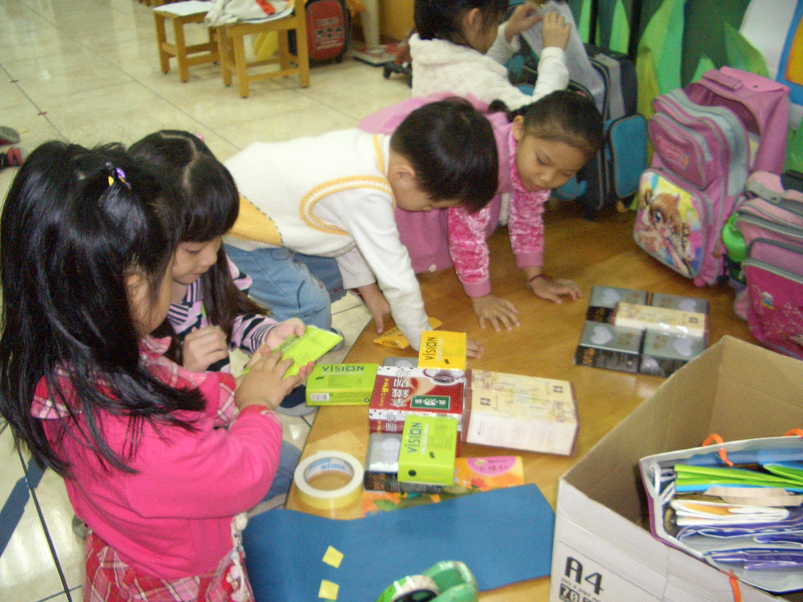 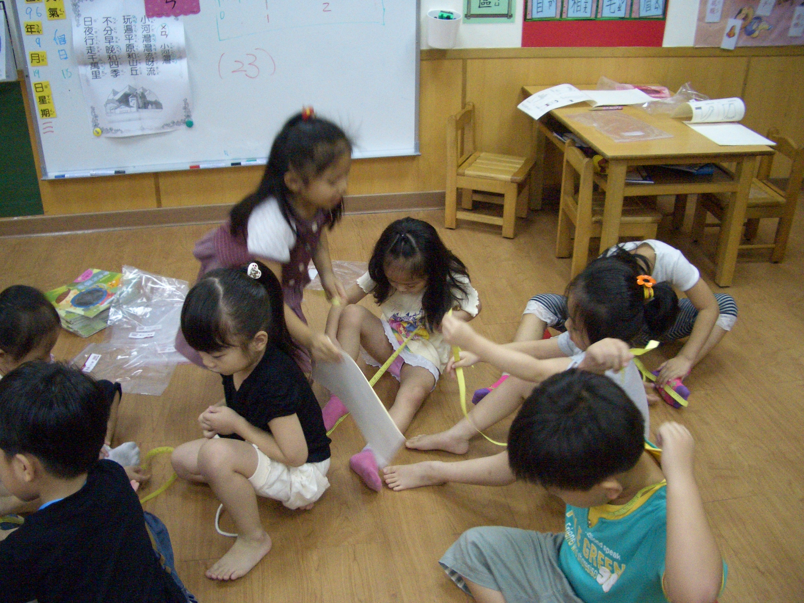 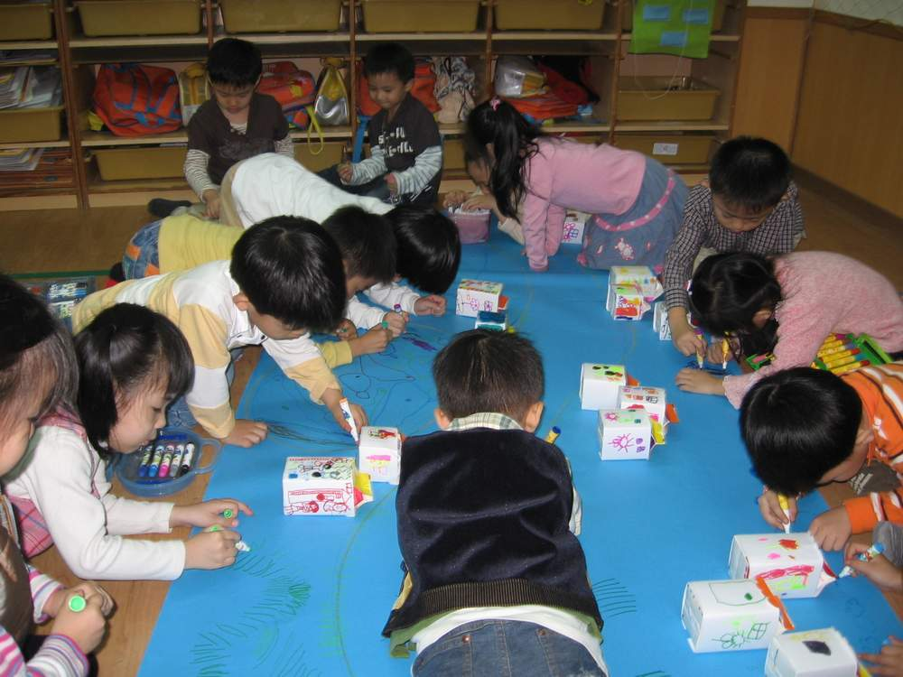
在進行主題教學的教室裡，你最容易感受到，而且是既豐富又實在的。老師透過主題教學活動的進
行，讓孩子完整的經歷一個從無到有的空間創造過程，因為，主題情境是共同營造出來的。在不同
的主題下，教室就像變魔術一樣，有時候是超級市場，有時候像是走進公主與王子的皇宮，換了主
題，又變成詩與畫的小小國畫大師聯合畫展。以矮櫃或不同顏色的墊子作區隔、以隔簾區隔圖書角
與積木角、以陳列架作圖書角與主題角的區隔、以偶台作圖書角與扮演角的區隔、運用實際生活素
材—扮演角中實際的吹風機與媽媽的化妝品。孩子像個小小設計師，親自打造心目中屬於他們的主
題情境。所以，教學情境佈置，不是貼滿注音符號表、數字表、字母表的填鴨無聊教室，也不是老
師常常要加班做紙雕、壁報、美工的工作室，而是可以展現孩子能力從中培養美感的研究室。